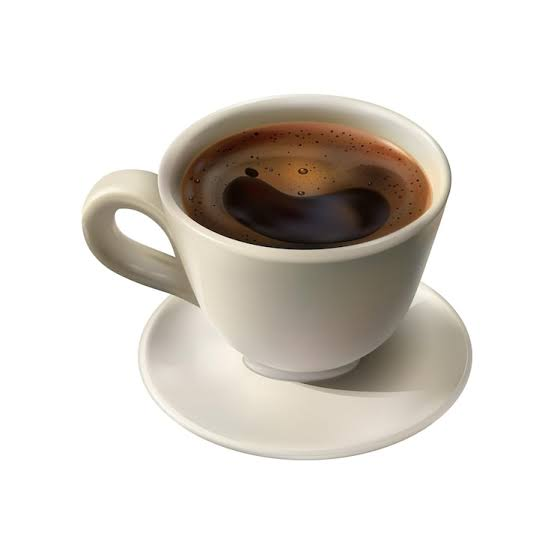

#1B5E40Acción principalSistema de diseño · v1.0
Biblioteca visual
Tokens y componentes que dan forma a la experiencia de la cafetería universitaria.
01 · Fundamentos
Paleta de colores
Colores de interfaz definidos en los estilos de la aplicación.
#D97706Acento y atención#F8F6F1Fondo de aplicación#FFFFFFSuperficies#1A1817Texto principal#E5DFD4Bordes y divisores02 · Fundamentos
Tipografía
Contraste entre títulos expresivos y texto de interfaz legible.
Un buen café
hace la pausa.
34 px / Regular
Tu pedido, a tu ritmo
Elige algo rico y recógelo en la cafetería del campus.
03 · Componentes
Botones
Jerarquía de acciones y tratamiento de estado deshabilitado.
04 · Componentes
Estados y mensajes
Indicadores breves para comunicar disponibilidad y resultado.
Disponible
Stock bajo
Agotado
En preparación
Entregado
Cancelado
05 · Componentes
Campos y filtros
Elementos de entrada presentados como referencia estática.
TodosBebidasPostres
2
06 · Componentes
Superficies y tarjetas
Contenedores con bordes suaves, fondos claros y elevación sutil.

Bebidas
Café Americano
Espresso doble con agua caliente.
2 productosS/ 13.00
Juan Pérez
Cuenta universitaria verificada